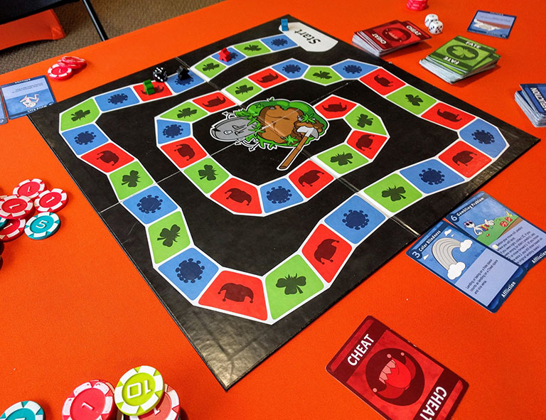

Cheating Death
Developed by Rasklz Publishing
Cheating Death WebsiteFacebook Twitter
Cheating Death is a board game about delaying the inevitable with 3-6 players. It started as the brainchild of David Erbelding, starting with the widely familiar “roll 'n' move” format and flipping it into an unwinnable race away from the finish. As the game progresses, players accrue Afflictions, which generally push them closer to death, while Cheat cards generally give players ways to gain an advantage. In addition, Fate events may be positive or negative for any number of players. The experience is delivered with a delightful sense of dark humor, conveyed, in my opinion, especially well through the work of our wonderful artists.
For obvious reasons, this game intended to be played by a group of people in the same room while joking about giving each other infectious diseases has been put on hold due to the COVID-19 pandemic.
My role in all this...
David worked on the first prototype of Cheating Death with some classmates while he was a student, and then continued developing it solo before agreeing to work with a few of us who were already part of Rasklz. Each of us helped with running playtests, both privately and at local game stores and conventions. I was involved in all our myriad meetings in which we adjusted card behavior and wording in response to player feedback, proposed new cards, and most importantly, decided card names and card art ideas to give to our artists. On the whole I really enjoyed those meetings because we were all generally good at bouncing ideas off each other to get to better final results than any of us would have come up with on our own, and we could all feel comfortable leaning a bit far in the direction of prioritizing humor and flavor in a proposal over potential mechanical issues or prioritizing mechanical simplifications over the game's distinct flavor knowing others on the team would help take the final product to a good balance. We were also all on the same page about ensuring the humor was enjoyable by a wide range of players—we are all too familiar with the myriad games that use “dark humor” as an excuse for bigotry and insensitivity, and we took care to ensure we were making a game about meeting the ups and downs of your own life with a sense of humor, not simply laughing at others' expense.
Beyond my work contributing input to the design of mechanics, art, and text of the game itself, I also helped maintain our online presence and created graphics for various other events, either from scratch or on top of existing game art. Really, much of our visual design work was collaborative (for instance, any given card has typography suggested by a couple of us, a general layout by David, a background aesthetic suggested by me but created by David, artwork by one of our artists, text that any number of us may have written or edited, etc.) so I hesitate to claim sole credit for basically anything, but I at least had a hand in much of the artistic side of things in addition to the mechanics (though regardless of who contributed to the card templates, David gets all the kudos for actually putting together the final printed art of each card).
I really hope we are able to bring this game to production, given the years of work we have put into it and the myriad friends and playtesters who want copies in The Before Times, but obviously doing so right now would be in very poor taste, so we will see how things go in the hopefully-not-too-far-off post-COVID-19 world.